Merge the 'clearfraudscore' column in loan.csv, payment.csv and clarity_underwriting_variables.csv. According to the data query, the 'clearfraudscore' may be calculated based on the first few columns in clarity_underwriting_variables.csv, applicant information verification, behavior analysis, etc. Therefore, for clarity_underwriting_variables.csv, only consider merging the 'clearfraudscore' column.
Filter out loans that have been funded (isFunded = 1). Only consider loans that have been funded, as only these loans have actually entered the repayment stage. Suitable for predicting repayment behavior and risk.
The following picture is the situation after data cleaning.
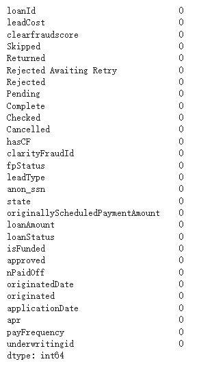
Based on the data query, I divided the ‘LoanStatus’ column into low risk, medium risk, high risk, and very high risk, and created a new column ‘Risk_Level’ based on the division as the target variable for subsequent analysis. The specific divisions are as follows:
| Loan Status | Definition | Risk | Risk_Level |
| Paid Off Loan | A loan that has been fully repaid. | Low Risk | 0 |
| New Loan | A newly issued loan. | Medium Risk | 1 |
| Internal Collection | After a loan defaults, internal collection attempts to recover the loan. | High Risk | 2 |
| External Collection | After a loan defaults, an external agency intervenes to recover the loan. | High Risk | 2 |
| Returned Item | A single repayment failure caused by insufficient funds. | Medium Risk | 1 |
| Pending Paid Off | A loan is in a state of being fully repaid. | Low Risk | 0 |
| Charged Off Paid Off | A loan that was originally written off is finally repaid. | Medium Risk | 1 |
| Settled Bankruptcy | A loan that is resolved through legal procedures due to the applicant's bankruptcy. | Very High Risk | 3 |
| Settlement Paid Off | A loan that is fully repaid through settlement. | Medium Risk | 1 |
| Charged Off | A loan is deemed unrecoverable by a bank or lending institution and is included in bad debts. | Very High Risk | 3 |
| Settlement Pending Paid Off | A loan is being repaid through settlement. | Medium Risk | 1 |
Loan Status Distribution : It can be seen that among the loan statuses of the obtained loans, External Collection accounts for the largest proportion, followed by Paid Off Loan. There is no Charged Off status.
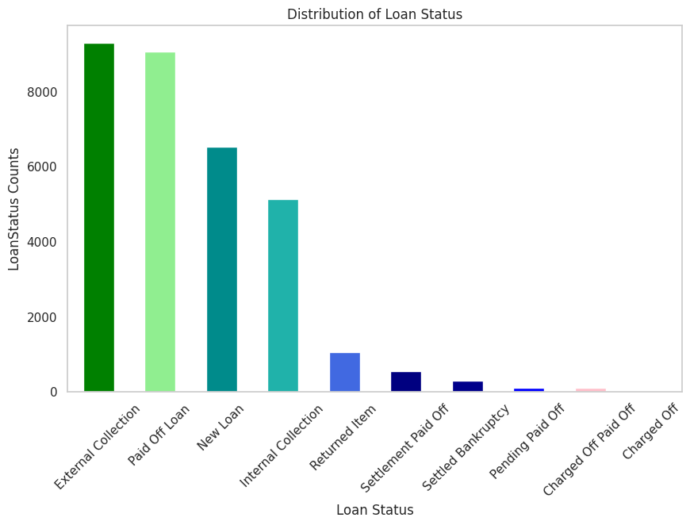
Loan Status by State : Ohio has the highest default rate, while Illinois and Ohio have the highest default rates in the "new loans" and "repaid loans" categories compared to other states. This is also closely related to the local economic scale and population size, which also means there is a greater market demand.Financial institutions can assess the risks and benefits of different regions and formulate corresponding strategies
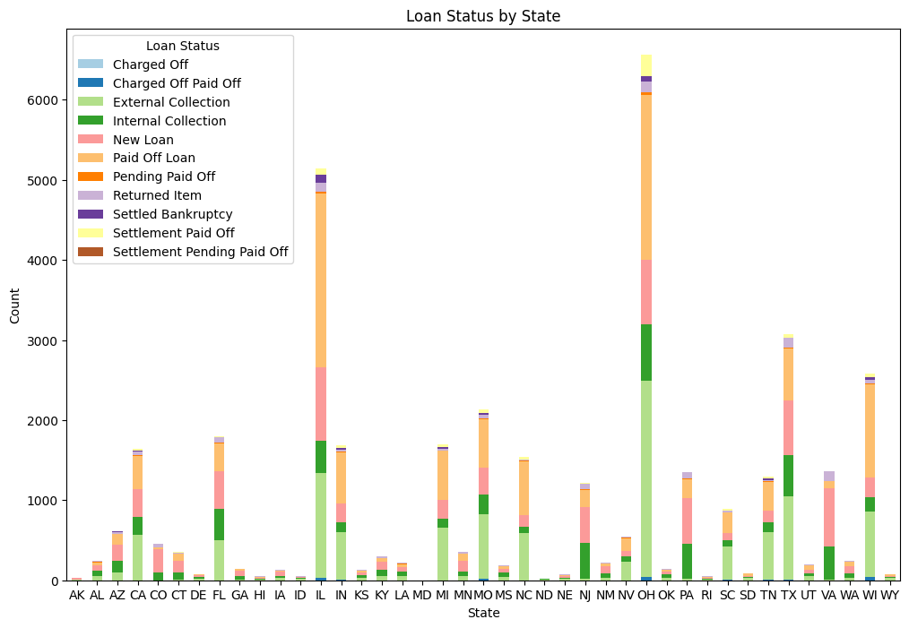
Risk Levels Distribution : The data distribution is uneven, and more data supplementation is needed later.
High risk accounts for the largest proportion, and extremely high risk accounts for the smallest proportion. Different loan strategies can be formulated based on different risk levels, as well as how they affect the user's subsequent credit rating, etc.
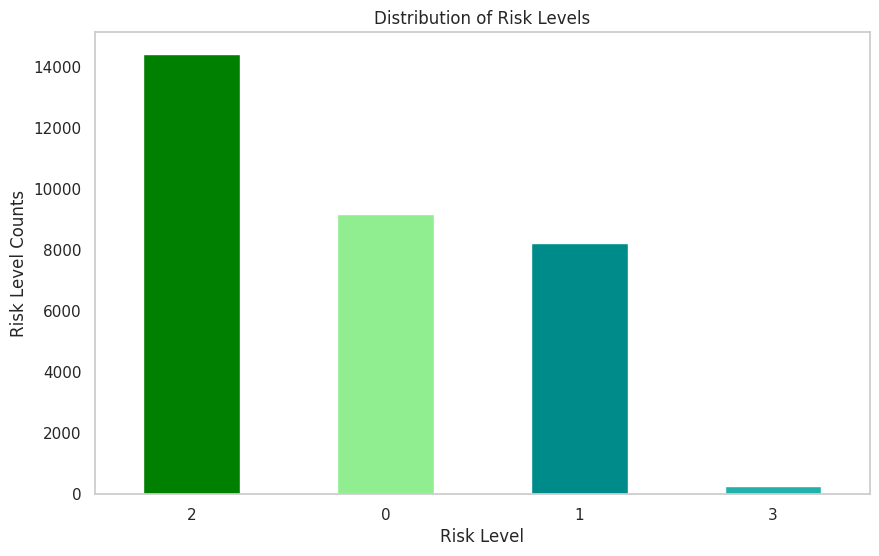
Distribution of loan amounts by risk level : There are more outliers in the low-risk loan amount, and there are more ultra-high-amount loans. There are not too many ultra-high-amount loans in the extremely high-risk. This should be attributed to the fact that financial institutions have formulated corresponding loan strategies according to different risks to reduce the risk of financial institutions collecting funds.
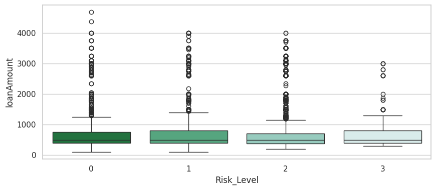
Amount of loans issued : The state with the most loans issued is Ohio, followed by Illinois and then California.
Average Annual Percentage Rate by State : The three states with the highest annual interest rates are Alabama, North Dakota and New Mexico.
This may be related to the local economy, because combined with the above figure, we can see that the states with more total loans have lower annual interest rates, while the states with less total loans have higher annual interest rates.
Distribution of Clear Fraud Score by Loan Status : The overall fraud clarity score in the Extternal Collection state is the lowest among the other states, and the Charged Off Paid Off score is the highest.
Distribution of Clear Fraud Score by Risk_Level : The distribution of high-risk clear fraud score is the most widespread, and the distribution of low-risk clear fraud score is the highest.
Feature Correlation : The strongest positive correlation with Risk_level is Rejected, fpStatus and Cancelled, and the strongest negative correlation is Checked
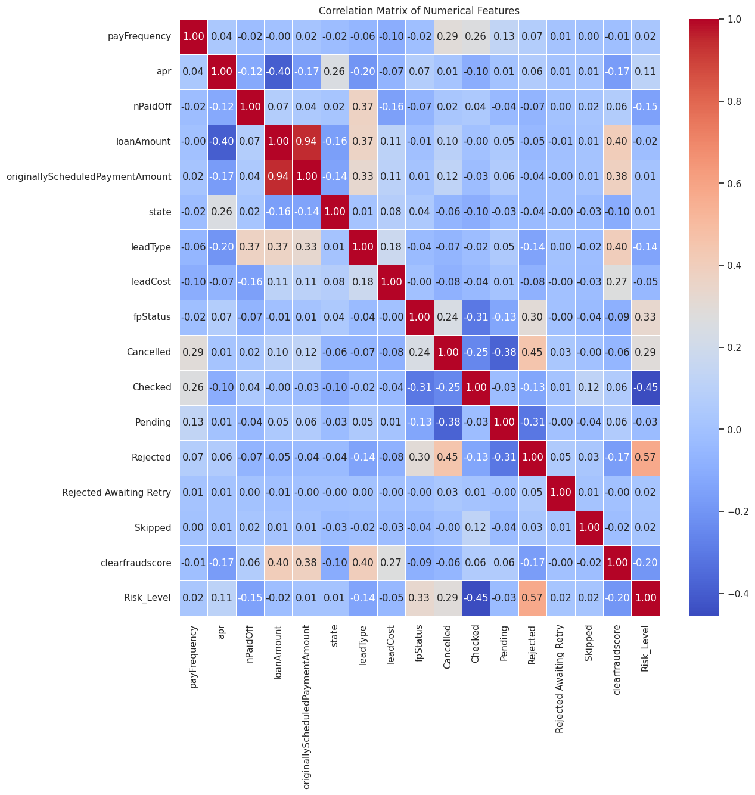
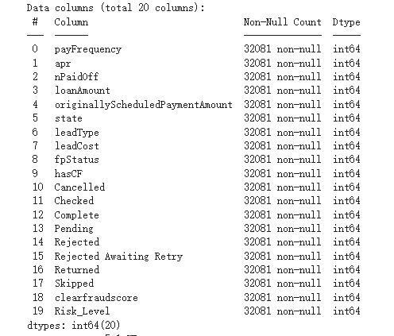
Combine RandomizedSearchCV to optimize model parameters.
The most important feature in this model is clearfraudscore, followed by originallyScheduledPaymentAmount
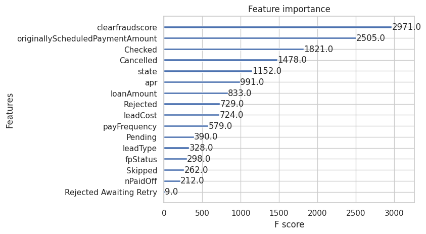
The AUC score of the model is: 0.912
The performance is better in class 0 and class 2. Due to the small number of samples in class 3, the model failed to learn enough information to make accurate predictions.
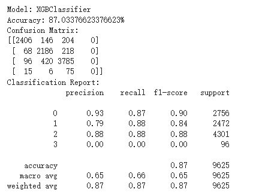
Bayesian optimization method was used for parameter optimization.
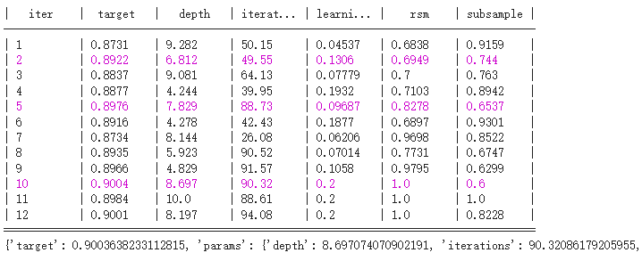
The best parameters are as follows :
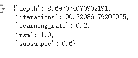
Areas for Improvement : First, we need to understand the risk level classification of financial institutions in order to accurately judge the risk of loan status. Secondly, more data is needed for training. From the training results, the data distribution of dividing loan status into four levels is uneven. The overall result is good, but the effect is not good at some risk levels.